CLAUDE’S PICK
Gemini 3.5: 프론티어 지능과 에이전트 기능을 결합한 최신 AI 모델


Google I/O 2026에서 공개된 Gemini 3.5는 최고 성능의 AI 모델들과 경쟁하면서도 Flash 시리즈의 빠른 속도를 유지하는 문제를 해결한다. Gemini 3.5 Flash는 코딩 및 에이전트 작업에서 우수한 성능을 보이며, Google Antigravity 플랫폼을 통해 개발자들이 복잡한 장기 작업을 기존의 절반 이하의 비용으로 처리할 수 있게 한다. 이는 애플리케이션 개발, 코드베이스 유지보수, 재무 준비 등 실제 문제 해결에 최적화되었다.
핵심 포인트: 핵심 성과: Gemini 3.5 Flash는 Terminal-Bench 2.1에서 76.2%, GDPval-AA에서 1656 Elo, MCP Atlas에서 83.6%의 벤치마크 성능을 기록하며, 다른 프론티어 모델 대비 절반 이하의 비용으로 운영 가능하다.
🔗 blog.google/innovation-and-ai/models-and…
블로그 (Blog)
n8n-workflows — GitHub에서 54,630개 별을 받은 자동화 템플릿 모음집
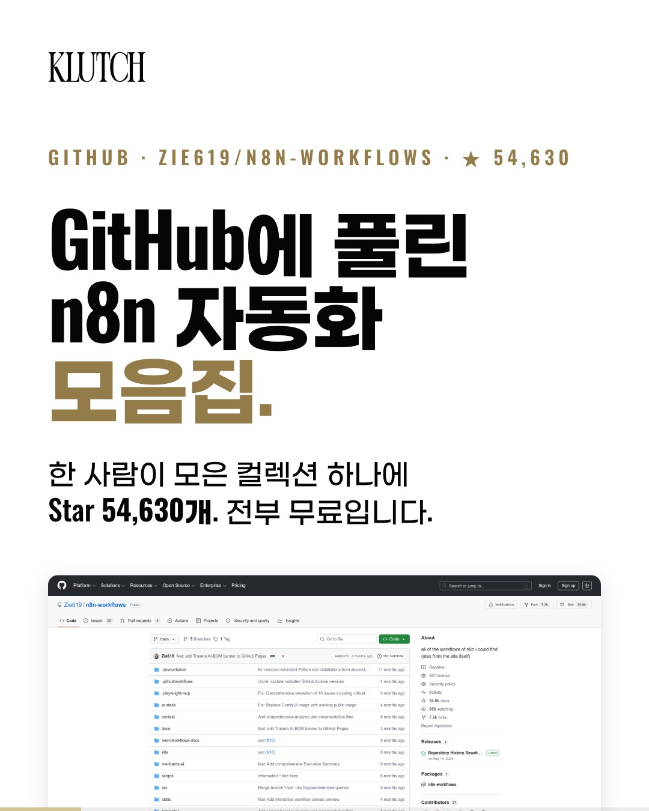
n8n 워크플로 자동화 템플릿을 찾기 어려운 문제를 해결하기 위해 커뮤니티가 구축한 대규모 오픈소스 컬렉션. Zie619의 n8n-workflows는 공식 사이트의 모든 워크플로와 커뮤니티 발견 템플릿을 통합한 최대 규모 저장소(Star 54,630)이며, 280개 이상의 폴더별 정리 템플릿(enescingoz, Star 22,381), AI 에이전트 전문 모음, 검색 가능 인덱스 등 다양한 파생 컬렉션이 활발히 관리되고 있다.
핵심 포인트: 핵심 기여: 54,630개의 별을 받은 최대 규모 n8n 워크플로 저장소와 5,834개 커뮤니티 노드를 다운로드 순으로 인덱싱한 awesome-n8n 프로젝트를 통해 자동화 개발자의 학습곡선을 대폭 단축했다.
🔗 github.com/Zie619/n8n-workflows
GitHub
DeepSeek Sparse Attention — 딥시크 핵심 기술 바닥부터 구현한 코드 공개
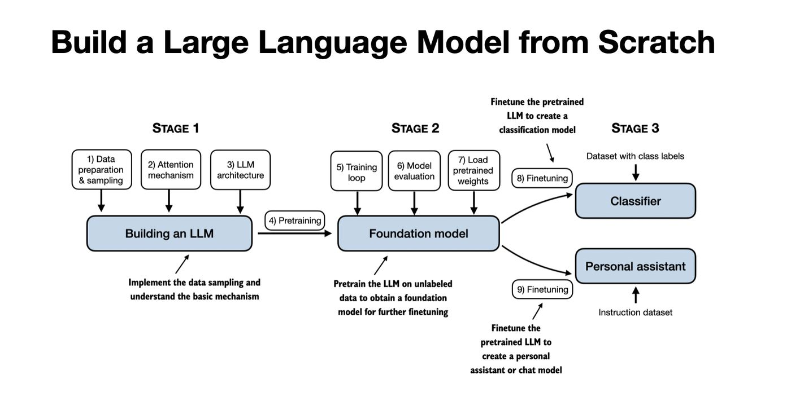
기존 어텐션 메커니즘은 모든 이전 토큰에 대해 O(L²) 복잡도의 계산이 필요하여 성능 병목이 발생한다. DeepSeek의 Sparse Attention 기술은 가벼운 인덱서를 통해 중요한 토큰만 동적으로 선택하여 어텐션을 계산함으로써 연산 복잡도를 크게 감소시킨다. 공개된 구현은 복잡한 기법을 제거하고 핵심 알고리즘만 깔끔하게 정리하여 LLM 내부 작동 원리 학습에 유용한 레퍼런스를 제공한다.
핵심 포인트: 핵심 기여: Sliding Window Attention과 동적 토큰 선택을 결합하여 O(L²)에서 O(L) 수준의 복잡도 감소를 실현하고, DeepSeek-V3.2부터 적용된 최신 어텐션 메커니즘을 이해하기 쉬운 형태로 구현 공개.
🔗 github.com/rasbt/LLMs-from-scratch/tree/m…
GitHub
AI & RESEARCH
SelfCI: LLM의 맥락적 무결성을 위한 자기증류 프레임워크
대규모 언어모델이 민감한 정보를 다루는 개인 에이전트로 배포될 때 맥락적 무결성 준수의 중요성이 커지고 있으나, 기존 모델들은 정보 공개 결정에서 신뢰성이 떨어지고 개선 방안은 작업 성능을 저하시킨다. SelfCI는 정보 억제와 작업 해결을 분리하는 상호 보완적 자기증류 프레임워크로, 두 개의 독립적인 역방향 KL 발산을 최적화하여 유용성을 위한 작업 관련 정보 보존과 적절한 정보 공개 최소화를 동시에 달성한다.
핵심 포인트: 핵심 기여: 외부 감독 없이 온라인 강화학습 알고리즘을 능가하며, 도메인 외 에이전트 워크플로우 및 누적된 개인 맥락에서도 우수한 성능을 유지하여 맥락적 무결성 정렬을 위한 실질적 경로 제시.
논문 (Papers)
AssetOpsBench — 산업용 에이전트의 시간 기반 의미론적 캐싱과 워크플로우 최적화
산업용 자산 운영 워크플로우는 센서 데이터, 작업 주문, 오류 모드 등 여러 요소의 조정이 필요해 대기 시간에 민감한 문제를 겪고 있다. 이 논문은 AssetOpsBench 벤치마크에서 기존 LLM 캐싱 기법의 한계를 분석하고, 시간과 자산, 센서 파라미터에 따라 결과 유효성이 달라지는 산업용 쿼리에 특화된 시간 기반 의미론적 캐시와 MCP 워크플로우 최적화를 제안한다.
핵심 포인트: 핵심 성과: MCP 워크플로우 최적화로 1.67배 속도 향상 및 중간 엔드-투-엔드 지연 40.0% 감소, 캐시 히트 시 중간 30.6배 속도 향상 달성. 파라미터 기반 산업용 쿼리에 대한 순수 의미론적 캐싱의 실패 사례를 구체적으로 분석하여 MCP 기반 에이전트 벤치마크의 평가 정확성 문제를 노출.
논문 (Papers)
Tax AI — 피드백 루프 기반 자가 개선 AI 에이전트
회계 업무 자동화에서 AI 모델의 정확도 저하 문제를 해결하기 위해 OpenAI와 Thrive Holdings가 개발한 Tax AI는 현업 전문가의 수정 행동을 자동으로 피드백 루프로 변환하는 자가 개선 구조를 도입했다. 회계사가 AI 결과를 수정하면 그 수정 과정이 평가 데이터와 테스트셋으로 자동 전환되어 Codex가 문제 원인을 추적하고 코드 작성부터 회귀 테스트까지 반복 수행하며 지속적으로 개선된다. 미국 30개 이상의 회계법인에서 7,000건 이상의 세금 신고를 처리하며 97% 정확도와 50% 처리량 향상을 달성했다.
핵심 포인트: 핵심 성과: 실제 업무 환경에서 최대 97% 정확도와 약 50% 처리량 향상 기록, 피드백 루프 기반 재귀 개선으로 도메인 파인튜닝 방식을 넘어 자동 개선 인프라 구축
🔗 openai.com/index/building-self-improving…
기타 (Others)
Anthropic Mythos — 에르되시 90번 문제 해결, AI 수학 추론 능력 검증
오픈AI의 추론 모델에 이어 앤트로픽의 Mythos 모델도 수학의 난제인 에르되시 unit distance 문제를 해결했다. 특히 Mythos는 오픈AI와는 완전히 다른 증명 구조로 수렴하면서 프론티어 모델들이 인간과는 별개의 독립적 수학적 사고경로를 탐색할 수 있음을 보여준다. 다만 외부 수학자의 검증과 더 강한 형태의 추측 해결 여부가 향후 과제로 남아있다.
핵심 포인트: 핵심 성과: 프론티어 모델들이 서로 다른 수학적 아이디어를 조합해 인간 연구자와는 다른 증명 경로를 독립적으로 탐색하며, 기존 AI 패턴 모방 주장을 반박하고 창발적 능력의 존재 가능성을 강화한다.
🔗 www-cdn.anthropic.com/files/4zrzovbb/webs…
기타 (Others)
DeepSWE — 실제 개발 환경 반영한 AI 코딩 벤치마크
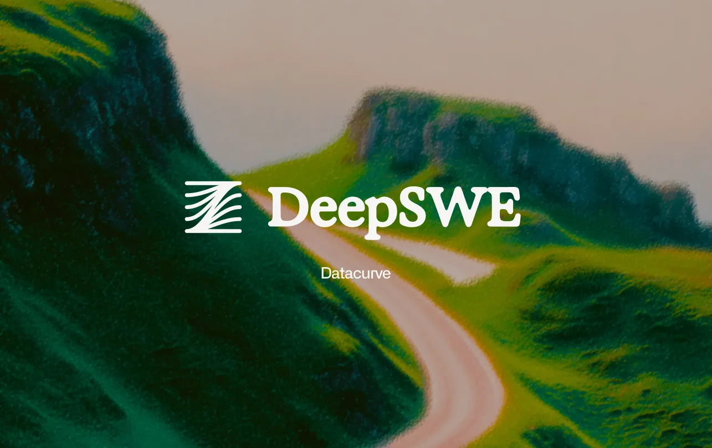
기존 코딩 벤치마크들이 공개된 깃허브 이슈와 PR을 그대로 사용해 모델 사전학습 오염과 8.5%의 위양성 오류를 야기하던 문제를 해결하기 위해 개발된 벤치마크. DeepSWE는 원점에서 새로 작성한 과제로 프롬프트는 짧지만 평균 668줄의 코드 작성과 7개 파일 수정이 필요한 실제 개발 업무를 반영해, 기존 리더보드에서 구분되지 않던 모델 간 성능 격차를 명확히 드러낸다.
핵심 포인트: 핵심 성과: GPT-5.5가 70%, GPT-5.4가 56%, Claude Opus 4.7이 54%로 최상위 모델 간 성능 차이가 분명하게 드러났으며, 기존 벤치마크 대비 5.5배 더 많은 코드 작성과 2배의 출력 토큰을 요구하는 장기 소프트웨어 엔지니어링 태스크를 포함한다.
기타 (Others)
Vision Banana: 이미지 생성 모델의 범용 시각 이해 능력 입증
이미지 생성 훈련을 받은 모델이 별도의 튜닝 없이도 2D/3D 시각 이해 작업을 수행할 수 있다는 한계가 지적되어 왔다. 구글 딥마인드의 Vision Banana는 이미지 생성 훈련이 LLM의 사전학습처럼 강력한 시각 표현을 학습하게 함을 입증한다. 가벼운 인스트럭션 튜닝만으로도 의미론적 분할, 깊이 측정, 인스턴스 분할 등 다양한 시각 작업에서 기존 전문 모델들을 능가하거나 대등한 SOTA 성능을 달성하며, 생성 능력을 유지하면서 멀티태스크 시각 이해를 실현한다.
핵심 포인트: 핵심 성과: 생성 기반 사전학습이 2D/3D 비전 작업 전반에서 제로샷 전이 학습으로 SOTA 달성, 세그멘테이션과 깊이 측정 등 기존 전문 모델(SAM, Depth Anything)을 능가하는 범용 시각 학습 패러다임 제시.
논문 (Papers)
PRISM: 전문가 페르소나가 LLM 정확도를 떨어뜨리는 이유
LLM 프롬프팅에서 흔히 사용되는 전문가 페르소나 지시가 태스크 종류에 따라 상반된 결과를 초래한다는 연구 결과. 검색, 수학, 코딩처럼 정확도가 중요한 작업에서는 모델이 페르소나 역할에 과도하게 정렬되면서 자신감 있는 오답을 제시하고, 사전학습 지식 접근을 방해한다. MMLU 벤치마크에서 기본 대비 최대 5.3%p 성능 저하를 보였으며, 페르소나는 새로운 지식을 추가하는 것이 아니라 기존 지식 검색 경로를 변조하는 메커니즘으로 작동한다.
핵심 포인트: 핵심 기여: 전문가 페르소나 프롬프팅의 이중 효과를 규명하여, 정렬 의존 작업에서는 성능 향상, 지식 의존 작업에서는 MMLU 기준 3.6~5.3%p 성능 저하를 실증적으로 증명. 페르소나 상세도가 높을수록 부정적 영향이 커지는 역상관 관계 확인.
기타 (Others)
TencentDB Agent Memory — 계층형 메모리로 에이전트 토큰 61% 절감
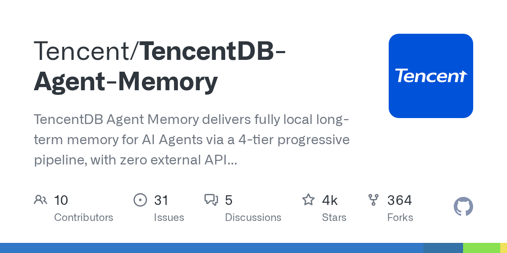
장시간 실행되는 AI 에이전트에서 원본 로그를 컨텍스트에 그대로 삽입하면서 발생하는 토큰 낭비 문제를 해결하는 메모리 구조. 텐센트가 공개한 이 시스템은 머메이드 그래프로 단기 메모리를 압축하고 피라미드형 구조로 장기 메모리를 계층화하여 토큰 사용량을 최대 61.38% 줄이면서도 작업 성공률을 51.52% 상대적으로 향상시킨다. SQLite 기반의 경량 로컬 설계로 외부 API 의존성이 없다.
핵심 포인트: 핵심 성과: WideSearch 벤치마크에서 토큰 사용량 61.38% 감소 및 성공률 51.52% 상대 향상, PersonaMem 정확도 48%에서 76%로 증가. 로컬 SQLite 기반 구조로 의존성 최소화.
🔗 github.com/Tencent/TencentDB-Agent-Memory…
GitHub
Codex — AI와 대화하며 반복 업무 자동화 기회 발굴
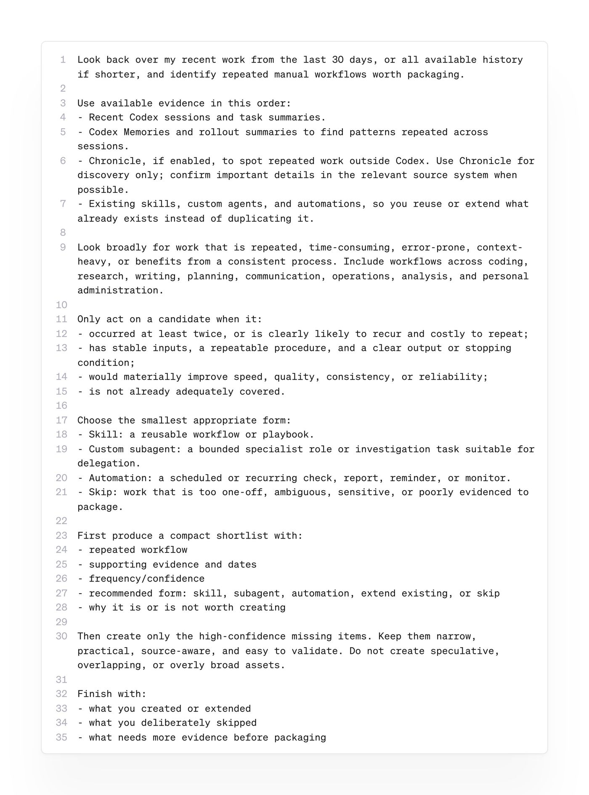
지난 30일간의 작업 패턴을 분석할 때 놓치고 있는 반복적 수동 워크플로우를 체계적으로 식별하기 어려운 문제를 해결한다. 이 프롬프트는 Codex 세션 기록, 메모리, 외부 작업 추적 데이터를 종합하여 패키징 가치가 있는 자동화 후보를 도출하고, 스킬, 커스텀 에이전트, 자동화 중 최적의 구현 방식을 추천한다. 코딩부터 개인 관리까지 전 업무 영역에서 속도, 품질, 일관성 개선 기회를 객관적 기준으로 우선순위화한다.
핵심 포인트: 핵심 기여: AI와의 지속적 대화를 통해 작업 패턴 학습을 고도화하고, 최소 2회 이상 발생하거나 재발 가능성이 명확한 워크플로우만 자동화 대상으로 선별하여 실행 효율성 극대화
🔗 threads.com/@aicoffeechat/post/DYvTXylk4N…
기타 (Others)
AlphaProof Nexus — AI가 56년 미해결 난제 2개 자동 증명
수학자들이 56년간 풀지 못한 에르되시 난제를 해결하기 위해 형식 증명 언어 Lean으로 정리된 353개 미해결 문제에 AI 에이전트를 적용하는 문제가 있었다. 구글 DeepMind의 AlphaProof Nexus는 Gemini 3.1 Pro 기반 LLM과 Lean 컴파일러 검증 루프를 결합하여 353개 중 9개 난제를 자동으로 풀었으며, 각 문제당 수백 달러 규모의 추론 비용으로 연구급 수학 문제 해결을 실현했다.
핵심 포인트: 핵심 성과: 353개 에르되시 난제 중 9개 자동 증명 성공(2.5%), 문제당 수백 달러(한화 30~70만 원) 추론 비용으로 56년 미해결 난제 2개 포함 해결. LLM 기반 생성과 Lean 검증 루프만으로도 동일 결과 달성 가능 확인.
논문 (Papers)
AI 리뷰어 — Nature 논문 심사에서 인간 전문가 능력 통계적으로 초월
과학 논문 심사의 품질과 일관성 문제를 해결하기 위해 최신 AI 모델들을 인간 리뷰어와 비교 평가했다. GPT-5.2 기반 AI 리뷰어가 종합 점수 60.0%로 인간 최고 리뷰어의 48.2%를 통계적으로 앞섰으며, 코드 오류나 숨은 수치 오류 같은 인간이 놓친 문제를 더 정확히 지적했다. 다만 AI는 지적 내용이 유사한 한계를 보여 다양한 관점 확보에는 인간 전문가의 통찰력이 필수적이다.
핵심 포인트: 핵심 성과: GPT-5.2가 인간 최고 리뷰어 대비 12.5%포인트 높은 심사 점수 획득, 모든 AI 모델이 최악의 인간 리뷰어보다 우수한 성과 달성. 25개 기관 45명 전문가가 469시간 투입해 2,960건 지적사항을 정확성, 중요도, 근거 충분성 기준으로 평가.
논문 (Papers)
MCP4IFC — 자연어로 BIM 모델을 직접 조작하는 LLM 프레임워크
건축 설계 도면 분석 시 코딩 없이 자연어 질문만으로 BIM 데이터를 검색하고 검증해야 한다는 문제를 MCP4IFC 프레임워크가 해결한다. Claude Sonnet 4.5가 Model Context Protocol을 통해 IfcOpenShell API를 직접 조작하여 공간 위상 파악, 부재 속성 조회, 규정 준수 검증 등을 자동화한다. 평면도 해석, 단면도 확인, 규격 검증 같은 반복적 도면 작업이 한 문장의 질문으로 단순화되며, LLM 기반 전수 검사로 건축 기준 미달 항목을 자동으로 발견할 수 있다.
핵심 포인트: 핵심 성과: 독일 연구팀이 개발한 오픈소스 프레임워크로 LLM이 IFC 모델 내 14개 문의 접근성 기준을 전수 검사하여 미달 항목을 자동 식별하고, 단순 치수 조회부터 복합 공간 위상 분석까지 네 가지 유형의 질문에 정확하게 응답했다.
🔗 show2instruct.github.io/mcp4ifc
기타 (Others)
MTEB: 단계별 관련성 점수로 임베딩 모델 벤치마크 재평가
기존 MTEB 벤치마크는 이진 관련성 점수만 사용해 실제 검색 품질을 정확히 측정하지 못하는 문제가 있었다. 이를 해결하기 위해 28개 MTEB 검색 데이터셋을 세 개의 LLM 판정자를 통한 단계별 관련성 점수로 재주석했다. 16개 임베딩 모델, 7개 리랭커, 112개 조합 전체를 평가한 결과 ZeroEntropy의 zembed-1과 zerank-2가 각각 1위를 차지했으며, 인터랙티브 대시보드를 통해 모든 모델 조합과 데이터셋을 확인할 수 있다.
핵심 포인트: 핵심 성과: 단계별 관련성 주석으로 이진 레이블의 한계를 극복했으며, zembed-1과 zerank-2가 개선된 평가 기준에서 최고 성능을 달성. 작성자는 재주석 데이터 공개 및 커뮤니티 제출 지원 의향을 표현했고, 레이트 인터랙션 모델 지원 추가 요청이 제기됨.
🔗 linkedin.com/posts/ghita-houir-alami_mteb…
기타 (Others)
Gated DeltaNet-2 — 선형 어텐션으로 KDA·Mamba-3 능가
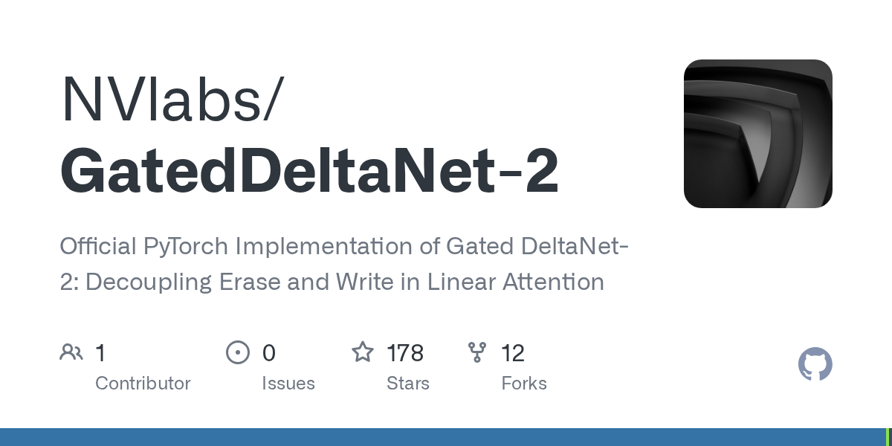
선형 어텐션 기반 순환 아키텍처에서 무한한 KV 캐시를 고정 크기 상태로 압축할 때 기존 메모리 편집 방식이 제한적인 문제를 해결한 논문. Gated DeltaNet-2는 채널별 지우기 게이트와 쓰기 게이트를 분리하여 메모리의 읽기/제거 축과 값 커밋 축을 독립적으로 제어한다. 1.3B 모델 스케일에서 KDA와 Mamba-3을 상회하며, 특히 장문맥 retrieval에서 S-NIAH-3 63→90, 다중키 needle retrieval 28→38로 획기적 성능 향상을 달성했다.
핵심 포인트: 핵심 성과: 1.3B 모델에서 KDA·Mamba-3 정면 초과 성능, 장문맥 RULER retrieval에서 S-NIAH-3 27포인트 개선(63→90), Triton 기반 gate-aware 백워드로 빠른 학습 속도 유지
기타 (Others)
Decision Context Graph — AI 에이전트의 맥락 손실 문제 해결
기업용 AI 에이전트가 RAG 방식으로 문서는 잘 찾지만 현재 상황의 맥락을 파악하지 못해 잘못된 판단을 내리는 문제가 발생했다. 디시전 컨텍스트 그래프는 이전 결정들을 기록하고 축적하는 방식으로 에이전트가 학습한 지식을 유지하고 상황에 맞는 판단을 내릴 수 있도록 한다. 이를 통해 AI 에이전트의 안정성과 신뢰도를 향상시킨다.
핵심 포인트: 핵심 기여: RAG의 한계를 극복하여 AI 에이전트가 이전 결정 기록을 바탕으로 맥락을 유지하고 지식 손실을 방지함으로써 기업 시스템에서 더 안정적이고 정확한 의사결정을 실현한다.
🔗 threads.com/@bori_world21/post/DYo6oCTgfP…
기타 (Others)
Command A+ — 기업용 에이전트 AI의 효율성 경쟁 시작
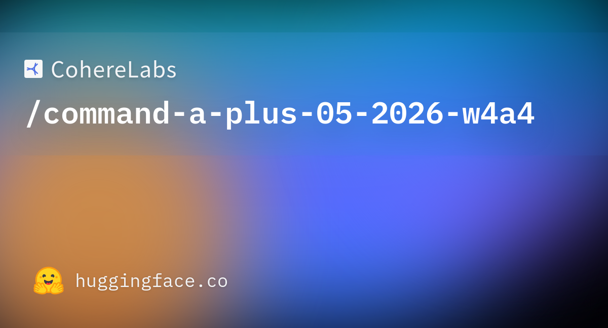
오픈소스 AI 경쟁이 모델 크기 비교에서 배포 효율성으로 전환되고 있는 가운데, Cohere가 공개한 Command A+는 에이전트 작업과 추론 성능을 강화하면서도 H100 GPU 2장만으로 기업용 AI를 운영할 수 있도록 설계됐다. 기업들이 벤치마크 점수보다 자체 데이터센터나 폐쇄망에서 안정적으로 직접 운영 가능한 모델을 요구하는 상황에서, 다국어 지원과 Apache 2.0 라이선스를 갖춘 Command A+는 초거대 모델이 아니라 충분히 똑똑하면서 배포 가능한 모델의 수요 증가를 반영한다.
핵심 포인트: 핵심 성과: H100 GPU 2장으로 엔터프라이즈급 에이전트 AI 운영 가능, Apache 2.0 라이선스와 다국어 지원으로 주권형 AI(Sovereign AI) 경쟁에 진입.
🔗 huggingface.co/CohereLabs/command-a-plus…
기타 (Others)
OpenAI: AI 모델이 80년 난제 평면 기하 문제 반박
80년 가까이 미해결 상태였던 Erdős의 평면 단위 거리 문제에 대해 OpenAI의 내부 추론 모델이 새로운 수학적 구조를 발견하여 기존 추측을 반박했다. 기존 평면 기하 접근 방식과 달리 AI는 대수적 수 이론의 급분체 탑과 Golod-Shafarevich 이론 같은 전혀 다른 분야의 도구를 독립적으로 활용하여 학계가 예상하지 못한 학문 간 연결을 구현했다.
핵심 포인트: 핵심 성과: AI가 서로 다른 수학 분야 간의 연결을 스스로 발견하여 인간 연구자의 전공적 경계를 초월한 문제 해결 경로를 개척했으며, 이는 AI가 단순 계산을 넘어 새로운 연구 방향성 자체를 제시하는 단계로 진화하고 있음을 시사한다.
🔗 openai.com/index/model-disproves-discrete…
기타 (Others)
DEVTOOLS & OPEN SOURCE
Hermes Agent — 오픈소스 에이전트 시장의 강자로 급부상
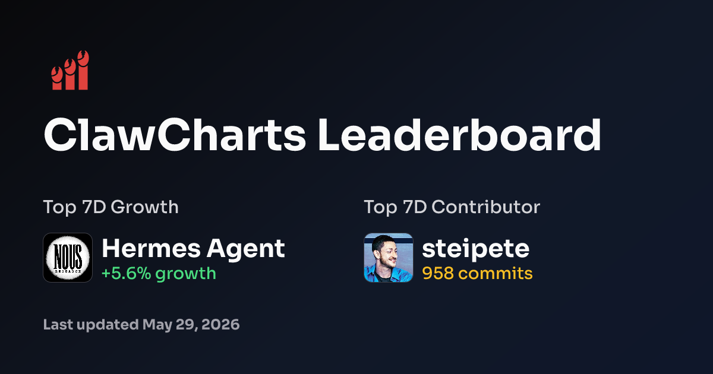
기존 AI 에이전트는 세션이 끝나면 학습 내용을 모두 잊어버리는 문제가 있었다. Nous Research의 Hermes Agent는 경험에서 스킬을 생성하고, 사용하면서 개선하며, 세션을 넘어 기억을 유지하는 자가 성장형 에이전트로 이 문제를 해결한다. 한 달 만에 점유율이 거의 10배 가까이 증가했으며, 2주 동안 216개의 PR이 머지되는 등 개발 생태계에서도 활발한 커뮤니티 참여를 보이고 있다.
핵심 포인트: 핵심 성과: 스타 10,800개, 컨트리뷰터 142명, 2주간 PR 216개 머지 달성. 지난 7일간 5.6% 성장률로 OpenClaw 다음 2위로 급상승하며 오픈소스 에이전트 시장에서 양강 체제를 형성하는 중.
기타 (Others)
Claude Code — 컨텍스트 윈도우 토큰 사용량 분석
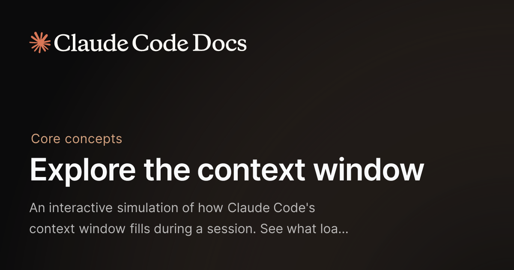
Claude Code 세션 시작 전 이미 36,700개 토큰이 소비되는 문제를 분석한 콘텐츠. 시스템 프롬프트, 내장 도구, 커스텀 에이전트, 메모리 파일, 스킬 설정 등으로 인해 실제 대화 내용은 전체 토큰의 6%에 불과하고 94%는 인프라에 할당된다. 프로젝트 규모에 따라 초기 오버헤드가 최소 7,850토큰부터 36,700토큰까지 5배 차이가 발생하며, MCP 서버와 커스텀 설정 추가 시 비용이 대폭 증가한다.
핵심 포인트: 핵심 기여: 토큰 사용량을 시각화하는 /context 명령어와 공식 시뮬레이터를 통해 숨겨진 인프라 비용 추적 가능. 실제 대화 대비 94.2%의 여유 공간과 2.1%의 자동 compact 버퍼 구조로 컨텍스트 윈도우 효율성 분석.
🔗 code.claude.com/docs/en/context-window
기타 (Others)
Claude Code v2.1.147 — 핀 고정 백그라운드 세션으로 메모리 효율화
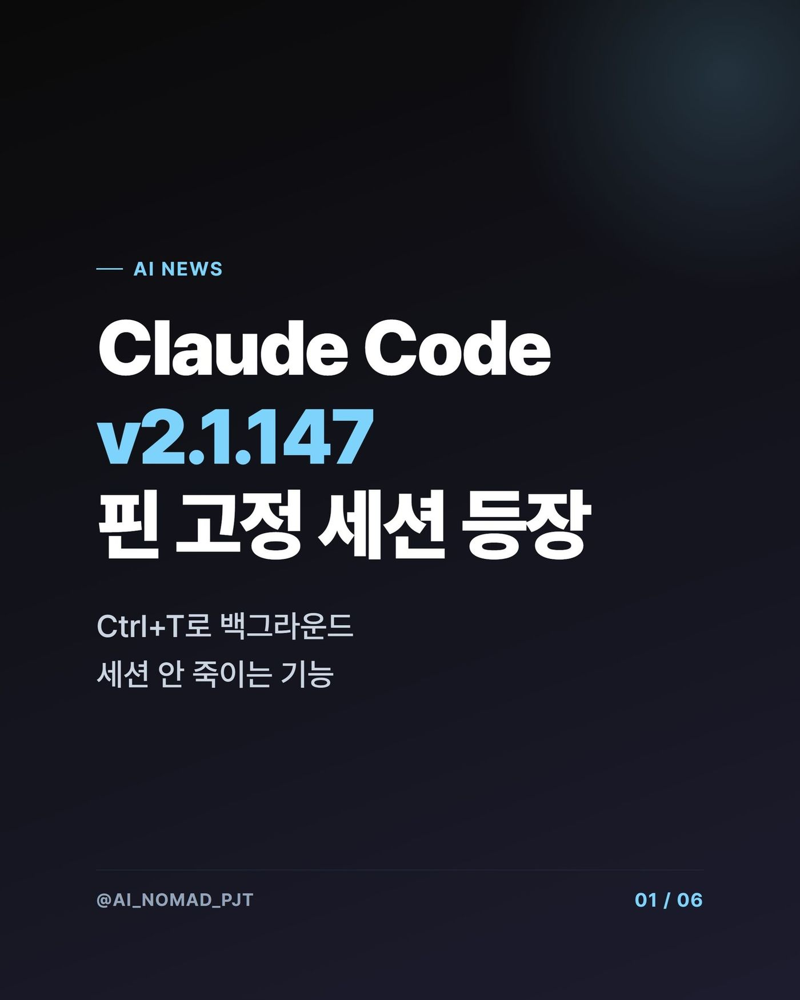
Claude Code의 백그라운드 세션이 유휴 상태에서 자동으로 종료되어 멀티 파이프라인 작업 흐름이 중단되는 문제를 해결한다. v2.1.147부터 Ctrl+T로 세션을 핀 고정하면 유휴 상태에서도 세션이 유지되며, 메모리 압박 발생 시 핀이 박혀있지 않은 세션부터 정리되어 리소스를 효율적으로 관리한다. JSON 덤프 기능, 코드 리뷰 자동화, Bash 회귀 핫픽스도 함께 포함되어 있다.
핵심 포인트: 핵심 성과: 핀 고정 백그라운드 세션으로 유휴 상태 자동 종료 방지 및 메모리 압박 시 우선순위 기반 정리로, 6개 파이프라인을 동시 운영하는 워크플로우의 안정성 대폭 향상.
🔗 threads.com/@ai_nomad_pjt/post/DY1DWV-k3M…
기타 (Others)
Claude Code Hooks — AI 코드 작성 중 실시간 보안 감시 시스템
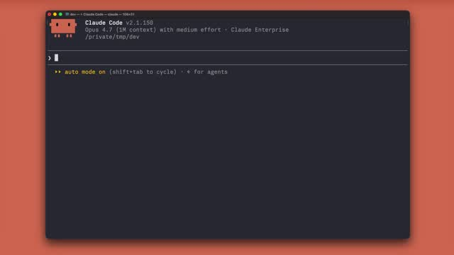
AI 코딩 도구가 생산성을 높이면서 보안 위험이 증가하는 문제를 해결하기 위해 앤트로픽이 Claude Code용 보안 플러그인을 공개했다. 코드 작성 중 위험한 라이브러리 감지, 완성 후 전체 diff 검사, 커밋 단계의 맥락 기반 취약점 검증을 통해 3단계 방어를 구현했다. 후크 시스템으로 AI 행동을 사전에 가로채 제어하며, 모든 사용자와 요금제에서 즉시 사용 가능하다.
핵심 포인트: 핵심 성과: 내부 테스트에서 보안 관련 PR 코멘트 30-40% 감소. 기존의 사후 검사 방식에서 AI 에이전트 옆에서 지속적으로 감시하는 실시간 방어 구조로 전환.
🔗 threads.com/@choi.openai/post/DY1TtPIEXYp…
기타 (Others)
Claude-md-management — AI 코딩 세션의 컨텍스트 효율성을 높이는 플러그인
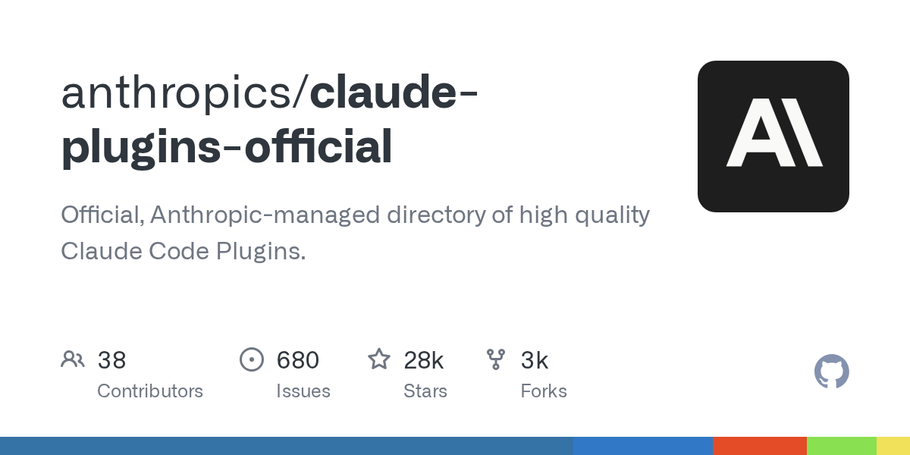
Claude Code로 장기간 프로젝트를 진행하면서 CLAUDE.md 파일이 방대해지고 실제 필요한 정보와 불필요한 내용이 뒤섞이는 문제가 발생한다. Claude-md-management 플러그인은 두 가지 도구로 이를 해결한다. claude-md-improver는 현재 코드베이스 기준으로 CLAUDE.md의 품질을 감시하고 평가하며, /revise-claude-md 명령어는 세션 종료 시 다음 AI 세션에 실제 도움이 될 정보만 선별하여 추가한다. 이를 통해 불명확한 패턴, 숨겨진 함정, 프로젝트 특화 지식을 체계적으로 관리하고 AI의 시행착오를 줄인다.
핵심 포인트: 핵심 기여: Commands, Architecture, Gotchas, Conciseness, Currency, Actionability 등 6개 기준으로 CLAUDE.md 품질을 자동 평가하고, 세션별 학습 내용을 선별적으로 축적하여 AI 에이전트의 프로젝트 이해도를 누적적으로 향상시킨다.
🔗 github.com/anthropics/claude-plugins-offi…
GitHub
CIVIL AI Korea — 글로벌 토목건설 AI 오픈소스 83개 통합 아카이브
토목건설 분야의 AI 개발자와 실무자들이 흩어진 GitHub 저장소에서 필요한 도구를 찾기 위해 시간을 소비하는 문제를 해결하기 위해 개인 사이트에 글로벌 토목건설 AI 오픈소스 83개를 7개 카테고리로 분류하여 통합 아카이브화했다. BIM/IFC, CAD, 도면 OCR, 측량/GIS, 구조해석, 시각화, AI 에이전트 분야의 주요 오픈소스를 정리하고 각 도구별 한국 적용 시나리오를 제시함으로써 한국 토목 도메인 실무자들의 의사결정을 지원한다.
핵심 포인트: 핵심 기여: IfcOpenShell, OpenSees, PDAL 등 글로벌 표준 도구 정리와 함께 지반 분야 기여 기회 제시, AI 에이전트 영역의 최신 도구(DDC Skills, MCP4IFC 등) 1년 내 신규 추적으로 한국 토목 AI 빌더 커뮤니티 연결 플랫폼 구축.
기타 (Others)
Claude Code — 대규모 모노레포에서 AI 코딩을 제대로 활용하는 방법

수백만 줄의 모노레포와 레거시 시스템에서 Claude Code의 성능이 제약받는 문제를 해결하기 위해 Anthropic이 제시한 실무 패턴. CLAUDE.md 파일 구조화, Hooks를 통한 자동 컨텍스트 업데이트, Skills의 선택적 호출, LSP 연동을 통한 기호 단위 정밀 탐색, MCP 서버 통합 등으로 모델 성능보다는 주변 하네스 구성이 실제 성공을 좌우한다는 점을 강조한다.
핵심 포인트: 핵심 기여: 디렉터리 단위 CLAUDE.md 배치, LSP 연동으로 Grep 대비 정밀도 극대화, Plugins를 통한 조직 전체 확산으로 신입 첫날부터 완벽한 AI 환경 구현 가능.
🔗 claude.com/blog/how-claude-code-works-in…
기타 (Others)
DataDrivenConstruction — CAD-BIM 파일을 AI 에이전트 데이터로 변환
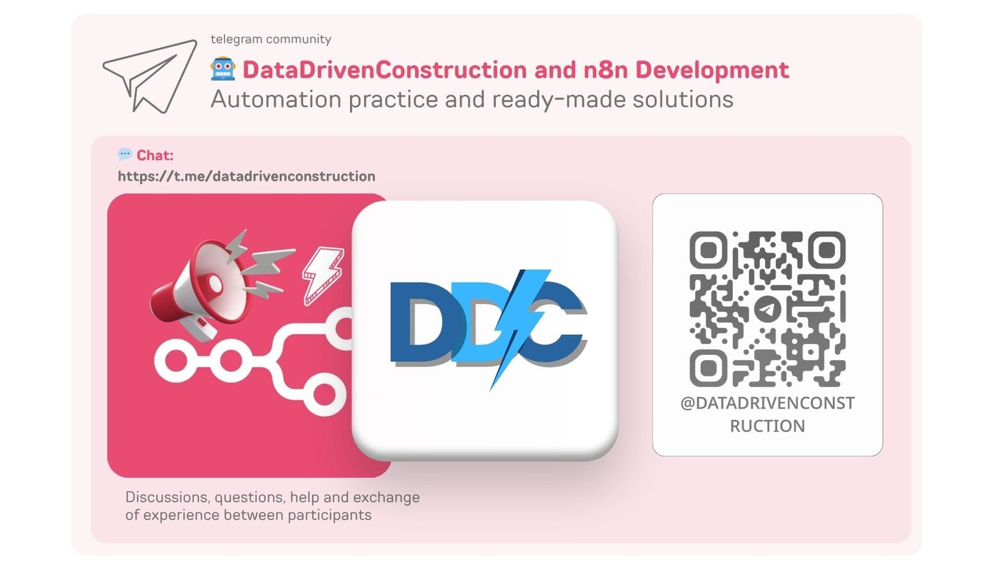
건설 설계 파일(RVT, IFC, DWG)은 데이터 접근이 제한된 형식으로 인해 자동화가 어려운 상태다. DataDrivenConstruction의 오픈소스 도구는 이러한 CAD-BIM 파일을 구조화된 테이블로 변환하여 AI 에이전트가 직접 활용 가능하게 한다. 한 줄의 프롬프트로 5,000개 항목의 컴플라이언스 검증과 수량 산출이 자동화되며, 100개 이상의 오픈소스 스킬을 제공하여 진입 장벽을 제거한다.
핵심 포인트: 핵심 성과: AI 에이전트가 단일 프롬프트로 5,000개 항목 검증 및 컴플라이언스 리포트 자동 생성, Claude와 Revit/DWG/IFC 조합으로 수량 산출과 대시보드를 한 문장으로 생성 가능하게 함. 오프라인 동작 및 pip install 한 줄 설치로 배포 장벽 제거.
기타 (Others)
NVIDIA AI-Q — 엔터프라이즈급 딥리서치 스킬을 에이전트에 포함

AI 에이전트가 복잡한 리서치 작업을 수행할 때마다 딥리서치 로직을 새로 구현해야 하는 문제를 해결한다. NVIDIA AI-Q는 검색, 자료 수집, 질의 분류, 심층 분석, 출처 정리를 포함한 딥리서치 기능을 휴대 가능한 오픈소스 스킬로 패키징한다. Claude Code와 OpenAI Codex 같은 에이전트 프레임워크에 이 스킬을 붙이면 로컬 또는 호스팅된 AI-Q 서버로 리서치 작업을 위임하고 출처가 포함된 보고서를 받을 수 있다. 특히 기업은 민감한 문서를 외부로 유출하지 않고 내부 환경에서 리서치를 수행할 수 있다는 이점이 있다.
핵심 포인트: 핵심 기여: 멀티 문서 합성, 엔터프라이즈 데이터 기반 의사결정 브리핑, 출처 추적이 포함된 장기 분석을 구현할 수 있는 엔터프라이즈급 리서치 블루프린트를 오픈소스로 제공.
🔗 developer.nvidia.com/blog/?p=116952&linkI…
기타 (Others)
Agent Skills — AI 코딩 에이전트를 위한 엔지니어링 스킬 라이브러리
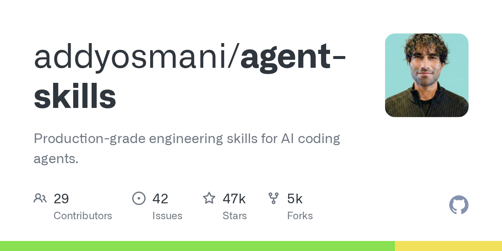
AI 코딩 에이전트는 강력하지만 편법을 선호하며 스펙 정의, 테스트, 보안 검토를 건너뛰는 경향이 있다. Agent Skills는 구글의 모범 사례를 기반으로 19가지 엔지니어링 스킬과 7가지 슬래시 명령어를 제공하여 AI 에이전트가 정의부터 배포까지 소프트웨어 개발 전체 라이프사이클을 따르도록 강제한다. 스펙 작성, 작은 단위 작업 계획, 점진적 구현, TDD 기반 검증, 코드 리뷰, 최적화, 배포 전 체크리스트 등 시니어 엔지니어들의 실제 워크플로우와 품질 검증 단계를 자동으로 활성화한다.
핵심 포인트: 핵심 기여: 마크다운 지원 모든 에이전트 환경에서 작동하며, Shift Left와 같은 구글 수준의 엔지니어링 문화를 에이전트의 단계별 워크플로우에 직접 통합하여 AI 코딩 에이전트의 품질과 신뢰성을 체계적으로 향상시킴.
🔗 github.com/addyosmani/agent-skills
GitHub
Agent Safety OSS — 중소건설사를 위한 AI 기반 안전문서 자동화 도구
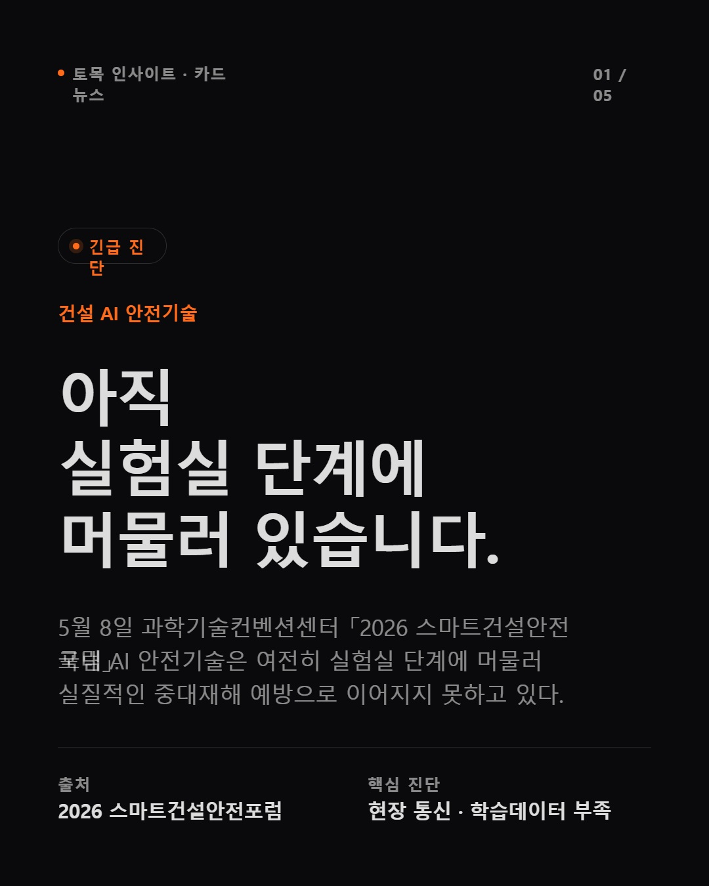
중소건설사는 안전관리자 선임 의무가 없는 현장에서 현장소장이 안전관리와 법정 문서 작성을 동시에 담당하지만 전문성과 인력이 부족해 어려움을 겪고 있다. 이 프로젝트는 산안법, KOSHA 가이드 등 공공데이터를 온톨로지 그래프로 구조화하고 LLM과 연결해 법정 안전문서 작성과 검토를 자동화한다. 8만 9천여 개의 중소건설사가 AI 전환 과정에서 소외되지 않도록 오픈소스 기반으로 제공하며, 향후 품질·공정·견적 등 건설 전반으로 확장할 계획이다.
핵심 포인트: 핵심 기여: 한 줄 요청으로 적용 KOSHA 가이드, 법령, 위험, 통제 사항을 자동 발견하여 결재 가능한 초안을 생성하고, 필수 항목 검출 및 법령 자동 인용으로 안전관리자의 문서 작성 시간을 단축한다.
🔗 github.com/ratelworks/agent-safety-oss
GitHub
NVIDIA Verified Agent Skills — AI 에이전트용 신뢰 가능한 스킬 카탈로그
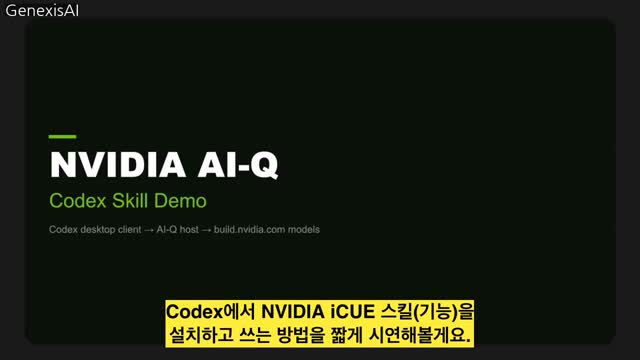
AI 에이전트가 파일 접근, API 호출, 코드 실행 등 실제 시스템 권한을 갖게 되면서 악의적이거나 결함 있는 스킬 하나가 데이터 유출이나 악성 명령 실행으로 이어질 수 있는 문제가 발생했다. NVIDIA는 Verified Agent Skills를 통해 스킬의 출처, 권한, 위험 요소, 수정 여부를 확인할 수 있는 검증 구조를 제공한다. 스킬 카드, 보안 스캔, 서명 검증을 포함하여 Claude Code, OpenAI Codex, Cursor 같은 에이전트에 안전하게 설치 가능한 포터블 스킬 생태계를 구축했다.
핵심 포인트: 핵심 성과: AI가 운영체제처럼 작동하는 시대에 스킬이 검증된 소프트웨어처럼 설치되도록 함으로써, 성능만큼 신뢰성도 핵심 기준으로 만들었다. AI-Q 같은 오픈소스 딥리서치 스킬로 민감한 내부 문서를 외부에 노출하지 않으면서 복잡한 리서치를 자동화할 수 있다.
GitHub
Claude Code — Deep Research 기능 통합으로 AI 코딩 에이전트 진화
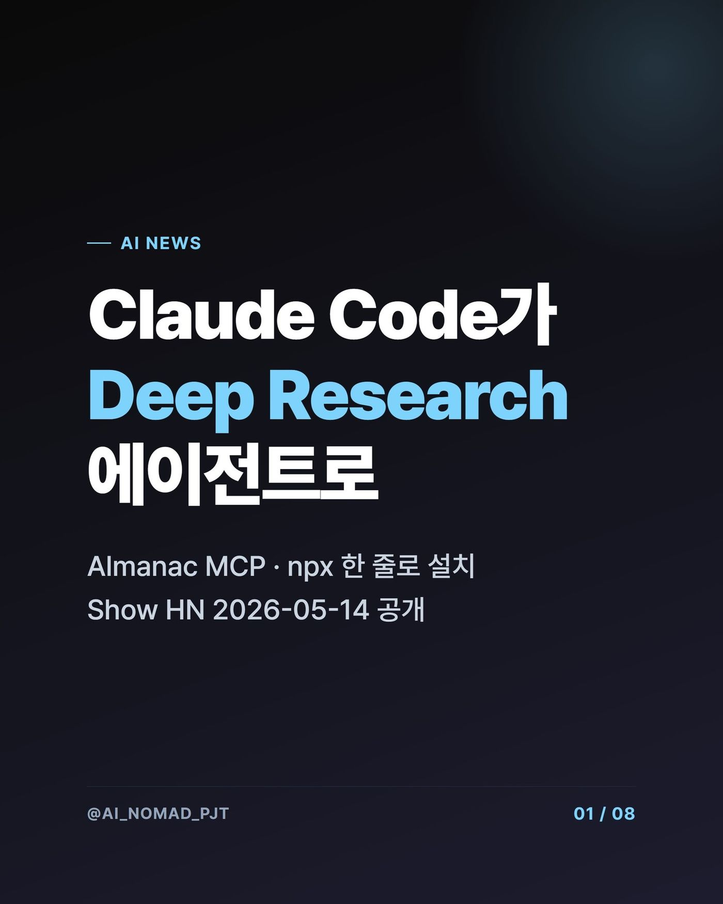
Claude Code가 단순 코딩 도구에서 벗어나 백그라운드 리서치 에이전트로 확장되고 있다. 이는 npx openalmanac setup 한 줄의 명령으로 구현되며, Almanac MCP를 통해 Deep Research 기능이 통합된다. 이를 통해 개발자는 코딩 작업 중 자동으로 필요한 리서치를 수행하는 AI 에이전트의 도움을 받을 수 있게 되어, AI 코딩 도구의 활용 범위가 크게 확대된다.
핵심 포인트: 핵심 기여: Claude Code에 Deep Research 기능을 일 줄의 명령어로 통합하여 단순 코딩 도구를 배경 리서치 에이전트로 변환, AGENTS.md 포맷을 통해 AI 에이전트에 최적화된 프로젝트 가이드 제공 표준화
🔗 threads.com/@ai_nomad_pjt/post/DYlPKlZE1jd
기타 (Others)
FuzzyAI — LLM API 탈옥 취약점 자동 검출 도구
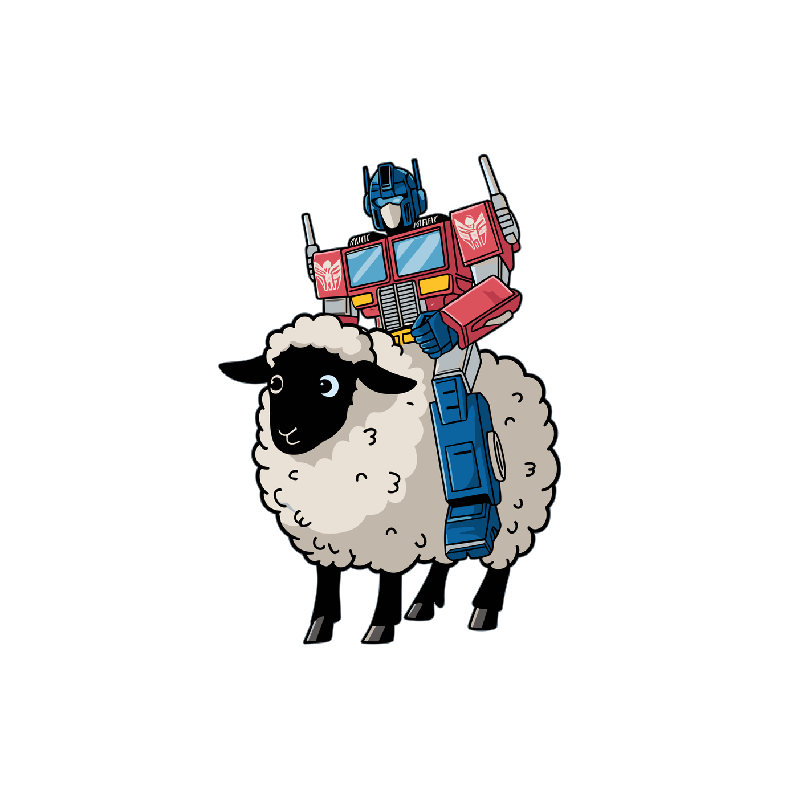
LLM API 배포 전 보안 검증이 어려운 개발자와 보안 연구자의 문제를 해결하는 자동화 퍼징 도구. CyberArk의 FuzzyAI는 LLM API에 대한 체계적인 퍼징을 통해 잠재적 탈옥(Jailbreak) 취약점을 사전에 자동으로 식별하고 완화하는 기능을 제공한다. 오픈소스로 공개되어 있으며, 로컬 또는 클라우드 기반 LLM 모델을 지원하고 웹 UI를 통한 간편한 실행이 가능하다.
핵심 포인트: 핵심 기여: 자동화된 LLM 퍼징으로 배포 전 보안 취약점을 체계적으로 검증하며, Poetry 기반 설치와 웹 UI, 로컬 Ollama 통합 등 개발자 친화적 인터페이스를 제공한다.
GitHub
ENGINEERING
Document AI 마이크로서비스: 프로덕션 규모 OCR/LLM 파이프라인 아키텍처
학술 연구는 새로운 문서 이해 모델 개발에 집중하면서 모델 정의와 프로덕션 규모 운영 사이의 큰 격차를 발생시켰다. 이 논문은 분류, OCR, 대형언어모델 기반 필드 추출을 통합하는 마이크로서비스 아키텍처를 제시하여 시간당 수천 개의 다중 페이지 문서 처리를 실현한다. GPU 바운드 추론과 CPU 바운드 오케스트레이션 분리, 비동기 처리, 수평 확장 전략을 통해 프로덕션 배포의 실제 문제를 해결한다.
핵심 포인트: 핵심 기여: 프로덕션 환경에서 시간당 수천 개 문서 처리 가능한 확장 가능한 아키텍처를 구현했으며, OCR이 언어모델 파싱보다 지연 시간을 지배하고 GPU 추론 용량이 병목이 된다는 핵심 발견을 제시한다.
논문 (Papers)
PRODUCT & INDUSTRY
Amazon Bedrock AgentCore — 컨텍스트 윈도우 제한 극복하기
대규모 문서 분석 시 LLM의 컨텍스트 윈도우 제한으로 인해 입력 실패 또는 불완전한 정보 기반 답변이 발생하는 문제를 해결한다. Amazon Bedrock AgentCore의 Code Interpreter와 Strands Agents SDK를 활용하여 Recursive Language Models를 구현함으로써 컨텍스트 크기 상한 없이 수백만 자 규모의 문서를 처리할 수 있도록 한다. 샌드박스 Python 환경에서 반복적인 문서 분석을 위해 Code Interpreter를 지속적 작업 메모리로 활용하고, 특정 섹션 분석을 위해 sub-LLM 호출을 조율한다.
핵심 포인트: 핵심 기여: 문서 크기와 모델의 컨텍스트 윈도우를 분리하여 제약 없는 길이의 문서 처리 가능. Bedrock AgentCore Code Interpreter를 지속적 메모리로 활용하여 반복적 문서 분석과 중간 결과 저장을 통한 효율적인 이유 도출 구현.
🔗 docs.aws.amazon.com/bedrock-agentcore/lat…
기타 (Others)
AWS Summit Seoul 2026: AI-Ready 데이터 플랫폼을 위한 비정형 데이터 처리 기법 소개
기업들이 직면한 비정형 데이터 처리의 어려움을 해결하기 위해 AWS Summit Seoul 2026의 Data and Analytics 부스에서 Semantic Layer 기반 AI-Ready 데이터 플랫폼 데모를 진행했다. 오픈소스 OCR 모델과 프론티어 모델을 결합하여 문서 인식 성능을 향상시키고, NER/Clustering 등 전통적 자연어 처리 기법으로 맥락 파악과 도메인 용어 수집을 수행함으로써 정확한 비정형 데이터 추출을 실현했다.
핵심 포인트: 핵심 성과: 이틀간 200명 이상의 고객이 방문하여 실제 OCR 모델 조합을 통한 문서 BBox 인식 및 추출 기법, 사용자 사전과 동의어 추출 방법론을 체험하고 데이터 플랫폼 구축의 구체적 사례를 습득했다.
🔗 linkedin.com/posts/kim-sewoong_aws-summit…
기타 (Others)
건설기준 디지털화 사업: 3432개 기준을 AI 인식 가능한 API로
건설 설계·시공 단계에서 기준 준수 여부를 검증하기 위해 고도의 숙련된 기술인이 필요했던 문제를 해결하기 위해 국토교통부가 추진 중인 사업이다. 2026년까지 3432개의 국가건설기준을 AI가 이해할 수 있는 구조화 데이터로 변환하고 API 형태로 무료 배포할 계획이다. BIM 모델에서 부재를 클릭하면 해당 기준이 자동으로 호출되고 충족 여부가 검증되므로 설계자의 수작업 부담이 대폭 감소한다.
핵심 포인트: 핵심 성과: 교량·건축·도로·철도·터널 등 7개 분야 559개 코드의 기준맵 구축을 완료했으며, 2026년 API 개방 시 BIM 기반 자동 설계검토와 설계오류 감소를 실현한다. 민간이 API 위에 자체 검증 시스템을 구축할 수 있게 되어 건설산업지능화의 기반이 마련된다.
🔗 kbmaeil.com/article/20251211500015
기타 (Others)
Gemini in Chrome: Skills 플래그로 AI 단축키 만들기
Chrome 브라우저에서 Gemini의 새로운 Skills 기능을 활성화하는 방법을 설명한 콘텐츠. chrome://flags/#skills에서 Skills를 ‘Enabled’로 변경하고 재시작한 후, 채팅창에서 ’/‘를 입력하면 스킬 생성 창이 나타난다. 글 요약, 이메일 초안 작성, 아이디어 브레인스토밍 등 반복 작업을 스킬로 만들어 개인 맞춤형 AI 도구 모음처럼 활용할 수 있다.
핵심 포인트: 핵심 기여: 유튜브 요약, 이메일 작성 등 일상적 반복 작업을 커스텀 스킬로 자동화하여 생산성 향상, 실험적 단계의 기능을 개인 맞춤 AI 단축키로 활용 가능.
🔗 x.com/testingcatalog/status/2058159956021…
기타 (Others)
OpenAI Codex — 맥 화면 잠금 상태에서 아이폰으로 원격 앱 제어
기존 GUI 자동화 도구들은 맥 화면이 꺼지거나 잠긴 상태에서는 작동하지 않는 문제가 있었다. OpenAI Codex의 Computer Use 기능은 이러한 제약을 극복하여 화면 상태와 관계없이 아이폰에서 원격으로 맥 앱을 조작할 수 있도록 지원한다. macOS에서 Screen Recording과 Accessibility 권한을 부여하면 데스크톱 앱 확인, 브라우저 조작, 앱 설정 변경 등 GUI 기반 작업을 원격에서 자동화할 수 있다.
핵심 포인트: 핵심 성과: macOS에서 화면 꺼짐/잠금 상태에서도 원격 GUI 제어 가능, LidStay와 같은 별도 유틸리티 없이 구현되어 배터리 모드 지원.
🔗 developers.openai.com/codex/app/computer…
기타 (Others)